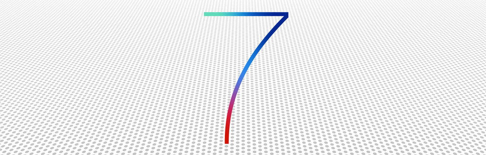

Convert app to iOS 7
လက်ရှိ App ကို iOS 7 အတွက် ပြောင်းလဲ ရေးဆွဲခြင်း

iOS 7 ထွက်လာတော့ လက်ရှိ iOS 6 app တွေကို iOS 7 အတွက် အဆင်ပြေအောင် ကျွန်တော်တို့တွေ ပြင်ရပါတယ်။ iOS 7 နဲ့ iOS 6 ဟာ UI အယူအဆတွေ ကွဲပြားသွားပါတယ်။ iOS 7 ဟာ flat UI ဖြစ်ပြီး လက်ရှိ flat UI နဲ့ ရေးဆွဲထားတဲ့ App တွေ အတွက်ကတော့ တကယ့်ကို လိုက်ဖက်မှု ရှိသွားတယ်။ Flat UI မဟုတ်တဲ့ App တွေအနေနဲ့ကတော့ iOS 7 အတွက် သီးသန့် flat UI ကို ထပ်ပြီး ရေးဆွဲရပါတယ်။
နောက်ထပ်ပြောင်းလဲသွားတာကတော့ Line icon ပါ။ iOS 6 က ပုံနဲ့ မတူတော့ပဲ line icon တွေကို ပြောင်းပြီး အသုံးပြုထားပါတယ်။

လက်ရှိ App တွေ iOS 7 ပုံစံ line icon တွေကို အောက်ပါ link တွေမှာ download ချနိုင်ပါတယ်။
စတာတွေမှာ download ချလို့ရပါတယ်။
iOS 7 မှာ status bar က iOS 6 နဲ့ မတူတော့တဲ့ အတွက် UI Design ကို ပိုပြီး လှပအောင် လုပ်လို့ရပါပြီ။ iOS 6 မှာတုန်းက UI Design က ဘယ်လိုပဲ လုပ်လုပ် အထက်မှာ status bar က ပါနေတော့ မလိုက်ဖက်လှဘူး။ status bar ဖျောက်လိုက်ရင်လည်း အသုံးပြုတဲ့သူတွေ အနေနဲ့ အချိန်တို့ battery တို့ကို ကြည့်လို့ မရတော့မှာ ဖြစ်တဲ့အတွက်ကြောင့် မဖျောက်ချင်ကြဘူး။ iOS 7 မှာ status bar နဲ့ navigation bar တစ်သားတည်း အနေနဲ့ မြင်တွေ့နိုင်ပါတယ်။
အခု iOS 7 မှာတော့ Navigation Bar ရဲ့ default အနေနဲ့ translucent ဖြစ်နေပါတယ်။ ဒါကြောင့် iOS 6 မှာ ရေးထားတာတွေကို iOS 7 မှာ ဖွင့်လိုက်ရင် တလွဲတွေ ဖြစ်ကုန်တာတွေရှိပါတယ်။ ဒါကြောင့် navigation bar သုံးထားပြီးတော့ iOS 6 အတွက်ကော 7 အတွက်ကော မှန်ချင်တယ်ဆိုရင်
self.navigationController.navigationBar.translucent = NO;
ဆိုပြီး အသုံးပြုရပါတယ်။
Facebook က iOS 7 အတွက် sidebar မသုံးတော့ပဲ tab ကို ပြောင်းသုံးထားတာကို တွေ့နိုင်ပါတယ်။ Sidebar ကို သူငယ်ချင်းရှာဖို့အတွက် ညာဘက်မှာပဲ ပြောင်းသုံးထားပါတယ်။ Sidebar က iOS 7 UI နဲ့ဆို သိပ်အဆင်မပြေလှပါဘူး။ iOS 6 အတွက်ကော iOS 7 အတွက်ပါ အဆင်ပြေဖို့ sidebar ရဲ့ view position ကို OS version ပေါ်မှာ မူတည်ပြီး ချိန်ညှိပေးဖို့လိုပါတယ်။
iPhone 5s က 64 bit ဖြစ်တဲ့အတွက်ကြောင့် Xcode 5 ကို အသုံးပြုပြီး 64 bit compile လုပ်လို့ရပါတယ်။ 64 bit ပြောင်းတဲ့ Guide ကို ဒီမှာ ဖတ်နိုင်ပါတယ်။
64 bit ပြောင်းတာ သိပ်ပြီး ခက်ခဲမှု မရှိလှပါဘူး။ သို့ပေမယ့် ကိုယ့် source code က မဟုတ်ပဲ Admob လိုမျိုး .a library တွေ ယူသုံးထားရင်တော့ 64 bit အတွက် အဆင်မပြေသေးပါဘူး။ သုံးထားတဲ့ library တွေက 64 bit ထွက်လာအောင် စောင့်ဖို့ တော့ လိုပါတယ်။
iOS 7 ထွက်ပြီး နောက်ပိုင်း ပြောင်းလဲသွားတဲ့ App Design တွေကို အောက်မှာ ကြည့်နိုင်ပါတယ်။


EBay iOS 7 vs iOS 6


Evernote iOS 7 vs iOS 6


Facebook iOS 7 vs iOS 6


Mailbox iOS 7 vs iOS 6


Mailbox iOS 7 vs iOS 6


Runkeeper iOS 7 vs iOS 6


Ted iOS 7 vs iOS 6


Zite iOS 7 vs iOS 6
အထက်က design တွေ ကြည့်လိုက်တာနဲ့ UI concept တစ်ခုလုံး ကွဲပြားသွားတာကို တွေ့နိုင်ပါတယ်။
UI သာမကပါဘူး icon တွေကိုလည်း iOS7 အတွက် အသစ်ပြန် ဖန်တီးကြပါတယ်။


aroundme iOS 7 vs iOS 6


Directr iOS 7 vs iOS 6


Mailbox iOS 7 vs iOS 6


Runkeeper iOS 7 vs iOS 6


Zite iOS 7 vs iOS 6
App icons အများစုက flat ပုံစံ ကို ပြောင်းလဲ ရေးဆွဲထားတာကို ဂရုပြုမိပါလိမ့်မယ်။ တကယ်လို့ iOS 7 အတွက် app ကို ပြောင်းတဲ့အခါမှာ icons ကိုလည်း အလေးထားပြီး ပြောင်းသင့်တယ်။ အရင်တုန်းက tweetbot ကို သဘောကျခဲ့ပေမယ့် အခုတော့ twitterrific ကို ကျွန်တော် ပြောင်းသုံးပါတယ်။ twitterrific က iOS 7 အတွက် flat design ဖြစ်ပြီး tweetbot ကတော့ အခု အချိန်ထိ iOS 6 design ပဲ ရှိသေးတာကြောင့်ပါ။ iOS 7 မှာ iOS 6 design app တွေက လိုက်ဖက် မှု မရှိသလို ခံစားရစေတယ်။
iOS 7 ကို ပြောင်းတာ ခက်ခက်ခဲခဲ တော့ မဟုတ်ပေမယ့် အချိန်တော့ပေးရပါမယ်။ အခုအချိန်မှာ iOS 7 သုံးစွဲသူတွေ 50% ရှိနေပါပြီ။ မကြာခင်မှာ ဒီထက် ပိုပြီးများလာတော့မှာပါ။ ဒါကြောင့် ဖြစ်နိုင်ရင် ကိုယ့်ရဲ့ App တွေကို iOS 7 အတွက် upgrade လုပ်ပြီး App store ပေါ် မှာ submit